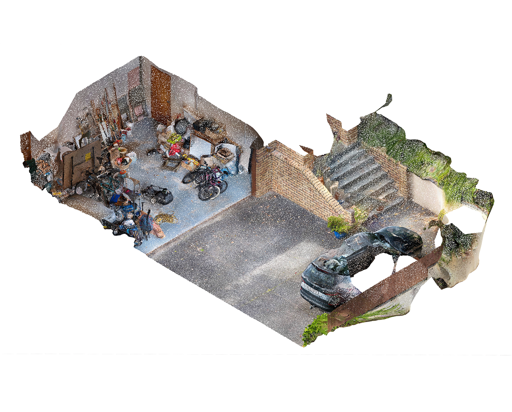

|  |
|
Sometime around 2018, the garage door broke down. It became unreliable and prone to falling under its own weight so we
stopped storing cars in the garage, which became a place for the storage of things not needed in the rest of the house.
In 2022, the garage became a temporary workshop for creating chairs for a Late Night Art installation, using borrowed
tools and makeshift workbenches. We continued to gather to make chairs in the following years, and in 2025 the walls
were thickened with noise insulation and more permanent workshop amenities.
|